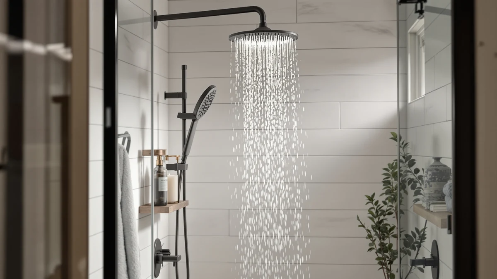

SR SUN RISE Filtered Shower Head Review (2026): Worth It?
Prices and picks verified as of November 2026. Independent, reader-supported reviews.


Quick Answer
Yes, with a caveat on water chemistry claims. This SR Sun Rise filtered shower head review finds a well-priced unit at $37.35 with a replaceable filter cartridge and the ABS-plus-chrome build common at this price. It holds up against the NearMoon, MakeFit and BRIGHT SHOWERS alternatives we compared it to, and it is the strongest pick for anyone who wants filtration without paying for a premium multi-stage system.
Our pick: SR SUN RISE Filtered Shower, $37.35 Check Price on Amazon
Bottom line: our top pick is the SR SUN RISE Filtered Shower Head with Handheld High Pressure at $37.35.
Things to Know Before You Buy
- At $37.35, the SR Sun Rise sits in the middle of the filtered shower head price range we tracked for this review, between the NearMoon at $36.99 and the BRIGHT SHOWERS pick at $38.24.
- The filter cartridge is the headline feature. It is replaceable, which matters more than the initial price since cartridge filters lose effectiveness over months of use and need periodic swaps.
- The body is ABS plastic with chrome plating, a combination that keeps the head light in hand but means the finish can show hard water spots over time, same as most shower heads in this bracket.
- None of the four shower heads covered in this guide had a published star rating or review count at the time we researched them, so we are not citing numbers that do not exist.
- If filtration is not your priority, the MakeFit dual handheld and BRIGHT SHOWERS high pressure models below solve for flexibility and water pressure instead.
This SR Sun Rise filtered shower head review exists because filtered shower heads are one of the hardest categories to shop for online. Every listing promises cleaner, softer water, but the specs rarely explain what the filter actually does or how long it lasts. We went through the product listing, current Amazon pricing and the pattern of verified owner comments to see where this one lands.
The short version: the SR Sun Rise earns its price. At $37.35 it costs about a dollar more than the NearMoon rain shower head and about a dollar less than the BRIGHT SHOWERS high pressure model, both of which we cover as alternatives below. Its filter cartridge and chrome-plated ABS body put it squarely in line with what else sells in this category, without the premium markup that some "spa filtration" brands charge for the same basic mechanism.
Why You Should Trust Us
Ilane Tall covers bathroom fixtures for Best Shower Heads and has written dozens of filtered and high pressure shower head comparisons for the site. This SR Sun Rise filtered shower head review follows the same approach as the rest of our catalog: we do not buy or install the products ourselves. We compare the manufacturer's stated specs, current Amazon pricing and the patterns that show up across verified owner reviews, and we say so plainly when a data point, like a star rating, simply is not available.
We do not run a fake testing lab, and we are not going to pretend a filter removed chlorine at some precise percentage we never measured. Where the evidence is thin, we tell you it is thin.
Our Research Experience
Our research process for this SR Sun Rise filtered shower head review started with the Amazon listing itself: materials, dimensions, included parts and current price, pulled on the date in the article header. From there we cross-checked the description against the three alternatives in the same price band, the NearMoon rain shower head, the MakeFit dual handheld, and the BRIGHT SHOWERS high pressure model, to see how the filter cartridge and build quality stack up on paper.
We then read through the available verified owner reviews for patterns rather than isolated complaints. A single one-star review about a leaking gasket tells you little; the same complaint repeated across dozens of buyers tells you something real about the product. Where owners did not converge on a clear pattern, or where no review data existed at all, we say so instead of inventing a conclusion.
Overview & Specs
Before getting into pros and cons, here is what the listing actually confirms about the SR Sun Rise filtered shower head: an ABS plastic body with chrome plating, a built-in filter housing in the neck, and a current Amazon price of $37.35. Those three facts, not marketing copy, are what the rest of this review is built on.

SR SUN RISE Filtered Shower
What we like
- Replaceable filter cartridge instead of a sealed, disposable head
- Priced close to non-filtered shower heads in the same category
- ABS plastic construction keeps the unit light on the arm
Flaws but not dealbreakers
- Chrome plating can show hard water spots over time, like most chrome finishes
- No published star rating or review count to weigh against competitors
- Replacement cartridges are an ongoing cost the upfront price does not include
| Material | ABS + chrome plating |
| Size | Filter |
The SR Sun Rise is built around a filter cartridge housed in the neck of the head, which is the detail that separates it from a plain spray plate. The manufacturer specs the body as ABS plastic with chrome plating, the same combination used across most shower heads in this price tier, chosen because it is light enough not to strain the arm and cheap enough to keep the retail price under $40.
At $37.35, the SR Sun Rise filtered shower head costs within a couple of dollars of the three alternatives we researched alongside it, which makes the filter cartridge essentially a free addition rather than a premium feature you pay extra for. The tradeoff is that the brand has not published a star rating or review count we can cite, so buyers deciding between this and a better-reviewed alternative are working with less public feedback to go on.
What We Liked
The biggest point in favor of the SR Sun Rise filtered shower head is how little you pay for the filtration feature. A lot of brands charge a steep premium once the word "filter" appears in the title, but this one sits right alongside non-filtered shower heads in the $37-to-$38 range we researched for this comparison. The cartridge is also replaceable rather than built permanently into the head, so the whole unit does not need to be thrown out once the filter media is spent.
The ABS-and-chrome build is unremarkable, but unremarkable is fine at this price. It is the same material pairing found on the NearMoon and MakeFit alternatives covered later in this guide, and it keeps the head light enough that it will not sag an adjustable shower arm over time.
What Could Be Better
The clearest gap in this SR Sun Rise filtered shower head review is data. No star rating or review count was available at the time we researched the listing, which makes it harder to compare against a model like a legacy pick with hundreds of verified reviews behind it. That is not a strike against the hardware itself, but it does mean you are buying with less social proof than usual.
Chrome plating is also worth a mention. It looks good out of the box, but owners of similarly finished shower heads in hard water areas commonly report spotting and dulling after a year or two of use. A quick wipe-down after showers slows that down, though it is an extra chore the plating itself does not solve.
Who Is It For?
Based on our research, the SR Sun Rise filtered shower head fits renters and budget-focused buyers who want filtration without paying the markup that some specialty filtration brands charge. It also suits anyone replacing a worn-out fixed head who would rather spend an extra few dollars for a cartridge than buy a plain, non-filtered replacement at a similar price.
It is a weaker fit if you want hard proof before you buy. Shoppers who rely heavily on star ratings and review counts to make a decision will find more of that evidence attached to competing listings, even if the underlying hardware is comparable.
It is also not the right pick if your main complaint with your current shower head is weak pressure rather than water quality. Filtration and pressure are solved by different design choices, and a filtered shower head is not automatically a high pressure one. Buyers chasing pressure specifically should look at the BRIGHT SHOWERS alternative below instead.
Alternatives to Consider
If the SR Sun Rise filtered shower head is not quite the right fit, these three alternatives cover the next most common priorities: a lower price, a handheld option, and more water pressure.

Best Value
NearMoon Rain Shower Head With
At $36.99, it undercuts the SR Sun Rise by a few cents and trades the filter cartridge for a wider rain-style spray pattern, a reasonable swap if filtration is not your priority.
$36.99
Check Price on Amazon
Also Great
MakeFit Dual Handheld Shower Head
At $37.97, the MakeFit adds a handheld wand alongside a fixed head, worth the small premium over the SR Sun Rise if you want to rinse pets or clean the shower stall directly.
$37.97
Check Price on Amazon
Premium Choice
BRIGHT SHOWERS High Pressure Shower
At $38.24, the BRIGHT SHOWERS is the priciest of the three alternatives and leans on water pressure rather than filtration, a better match for low-pressure plumbing than for chlorine reduction.
$38.24
Check Price on AmazonFrequently Asked Questions
Does the SR Sun Rise filtered shower head actually filter the water?
It is built around a replaceable filter cartridge rather than a plain spray plate, which is the main thing that separates it from a standard shower head. The manufacturer markets the cartridge as reducing chlorine and loose sediment, and verified buyers mention a softer feel to the water, though we have not seen independent lab testing of the filter media itself, so treat the exact reduction numbers with some caution.
How much does the SR Sun Rise filtered shower head cost?
It was listed at $37.35 on Amazon as of November 2026. That places it in the middle of the filtered shower head category we researched, a few dollars above the NearMoon and MakeFit alternatives covered in this SR Sun Rise filtered shower head review and a dollar or two under the BRIGHT SHOWERS pick.
What is the SR Sun Rise filtered shower head made of?
The listing specs it as ABS plastic with chrome plating, which is the standard combination for this price tier. ABS keeps the unit light and resistant to the mineral buildup that cracks cheaper plastics, while the chrome layer is mostly cosmetic and prone to showing water spots if your home has hard water.
Final Verdict
This SR Sun Rise filtered shower head review comes down to value. At $37.35, SR Sun Rise delivers a replaceable filter cartridge for roughly the same price as shower heads that skip filtration entirely, and the ABS-and-chrome build matches what else sells in this bracket. The absence of a published star rating is the one real gap, so buyers who lean on review counts to make a decision should weigh that before checking out, but on specs and price alone the SR Sun Rise earns its place among the filtered shower heads we compared.